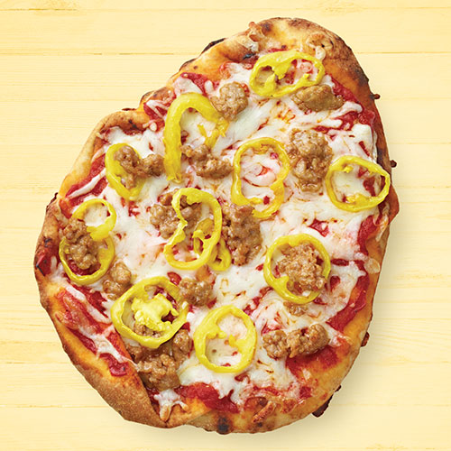

Italian sausage and Banana pepper Naan pizza recipe

Ingredients
- 1Italian classics Mild Sausage patty
- 1pkg(8.8oz)Wegmans Traditional Naan Flat Bread
- 3/4cup Wegmans Smooth Pizza Sauce
- 1/2Wegmabs Shredded Whole Milk mozzarella(Dairy Dept)
- 1/4 Wegmans Mild Banana pepper Rings
Steps
- Heat the pan on MED-HIGH. Crumble sausage patty into small pieces; add to pan.
Cook,stirring ocassionally, 2min until browned.Reduce heat to low.Cook about 5min,untill internal temp reaches 160 degrees
Set aside
- Spread each naan with 6Tbsp pizza sauce;top each with half the cheese,sausage and peppers.Cook using desired method
- Grill:preheat grill to MED.Place naan on nonstick foil sheet;transfer to grill.Grill covered,5-10 min,until crust begins to brown
- Oven:Preheat the oven to 450 degrees with rack in center.Transfer pizzas directly to oven rack.Bake,7-10 min,untill crust begins to brown.
- Oven with pizza stone:Set stone in cold oven;heat 15min at 450degrees.
Transfer pizzas carefully to preheated stone.Bake,5-7 min,untill crust begins to brown